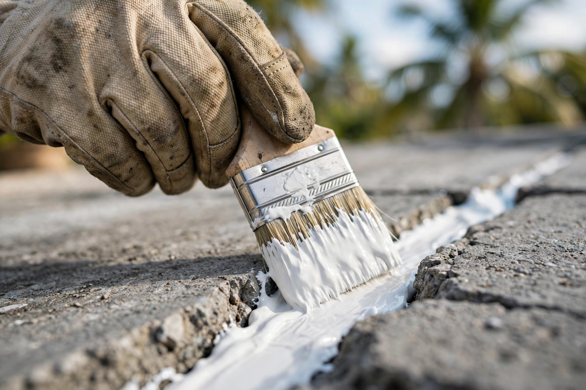
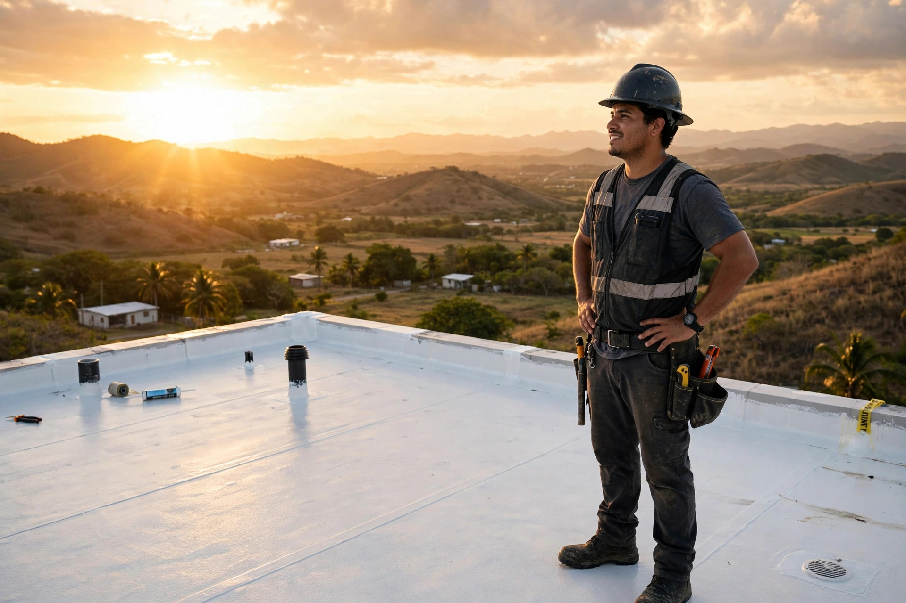
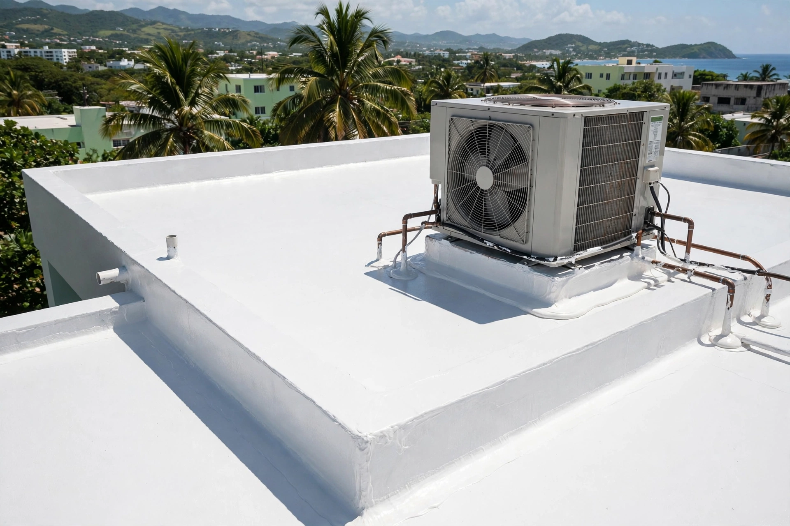

Coamo · Sur de Puerto Rico
Sellado de techos en Coamo con acabado blanco reflectivo. Corregimos grietas, sellamos penetraciones y lavamos el techo antes de sellar.
Trabajos reales
Cada foto es un trabajo real de sellado de techos. Desliza la cinta y toca cualquier foto para verla grande.



← desliza para ver los trabajos →
Lo que hacemos
Servicios de Selladores de Techos PR en Coamo · Sur de Puerto Rico. Cotiza por WhatsApp: sin compromiso.
Impermeabilización completa de techos residenciales y comerciales.
SelladoAtendemos grietas, juntas y puntos débiles antes de sellar.
SelladoDetalle cuidadoso alrededor de tubos, ventilas y equipos.
SelladoEl blanco final refleja el sol y ayuda a mantener la casa más fresca.
SelladoAsí de fácil
Escríbenos por WhatsApp con fotos de tu techo. Estimado gratis y sin compromiso.
Visitamos tu propiedad, medimos el techo y diagnosticamos filtraciones y puntos débiles.
Lavado a presión, reparación de grietas y acondicionamiento de la superficie.
Aplicamos el sistema de sellado completo con acabado profesional que dura años.
Quiénes somos
Selladores de Techos PR trabaja sellado de techos en Coamo, Puerto Rico. Corrección de grietas, sellado de penetraciones y acabado blanco reflectivo.
¿Tu techo filtra cada vez que llueve? El sellado blanco también baja el calor dentro de la casa.
Preguntas frecuentes
El blanco refleja los rayos del sol en lugar de absorberlos: el techo se calienta menos y la casa se mantiene más fresca.
Sí. La superficie se limpia y se prepara primero para que el sellado adhiera bien y dure.
Depende del tamaño y la condición del techo. En la cotización te decimos el tiempo estimado para tu caso.
Estamos en Coamo, Puerto Rico.
Escríbenos por WhatsApp al 787-718-9607 o llámanos directo.
Cotiza tu techo
Llena esto y te abrimos WhatsApp con tu mensaje listo.
Cotización gratis: dinos tu pueblo y qué le pasa a tu techo. Te orientamos sin compromiso.
Esta página la creó ManuPro. Escríbenos hoy mismo y cotiza la website profesional de tu negocio.
Cotizar por WhatsApp